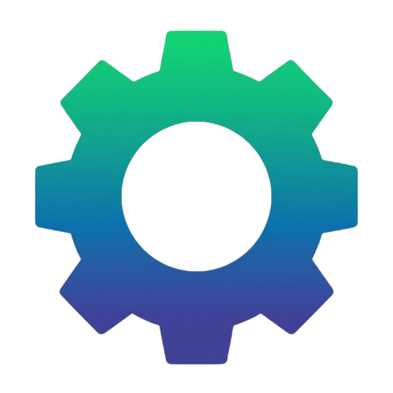

TECH

AULATech aula
Tech Aula é uma plataforma criada para conectar conhecimento e
tecnologia em um só lugar. Oferecemos cursos oline atualizados e uma
seleção de produtos tecnológicos desenvolvidos para facilitar o
aprendizado, aumentar a produtividade e acompanhar as inovações do
mercado.
Na Tech Aula, você encontra cursos
oline nas mais diversas áreas. As
aulas são acessíveis de qualquer
lugarm com conteúdo atualizado,
suporte ao aluno e certificados para
auxiliar no desenvolvimento.
Além dos cursos, a Tech Aula oferece uma
seleção de produtos tecnológicos, como
notebooks, periféricos, acessórios e
equipamentos para estudo e trabalho. Nossos
produtos são escolhidos para garantir
qualidade, inovação e o melhor desempenho
para nossos clientes.